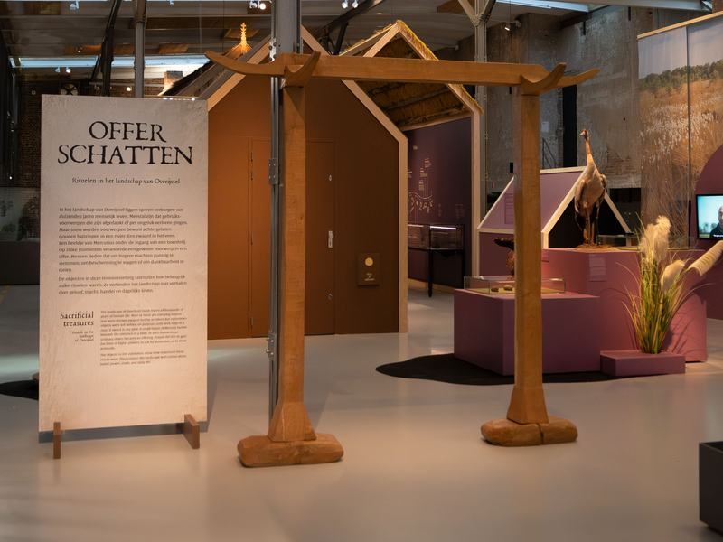
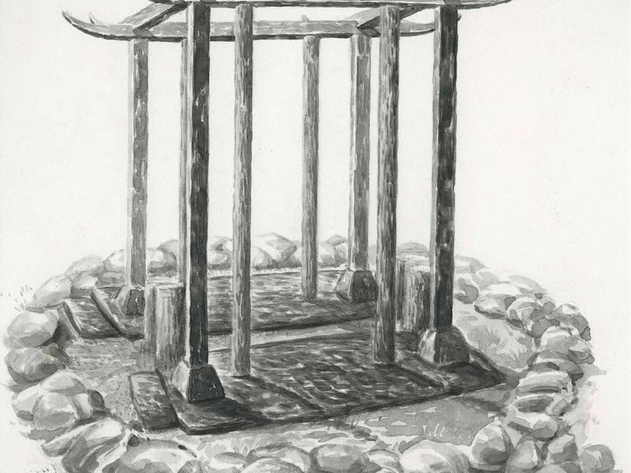
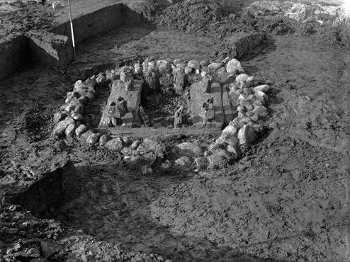
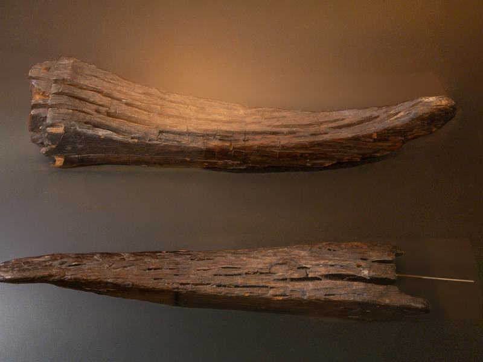
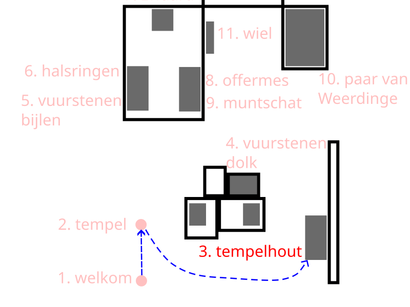

2. Nachbau des Bargeroosterveld-Tempels, ca. 1500-1250 v. Chr.





Hier sehen Sie eine Nachbildung des kleinen Tempels von Bargeroosterveld. Es handelt sich um ein bemerkenswertes Bauwerk aus der Bronzezeit, das am Rande eines Hochmoors gefunden wurde. Derart kleine Gebäude sind in Europa selten.
Vor der Ankunft des Christentums fanden Rituale meist im Freien, in der Natur, statt. Man denke an Lichtungen, neben einem großen Stein oder einem Baum. Dieser kleine Tempel zeigt, dass die Menschen manchmal auch einen besonderen Ort für Rituale errichteten.
Das Bauwerk war etwa 2 mal 2 Meter groß. Es bestand aus acht Eichenpfosten, die auf breiten Brettern standen. Darauf lagen Balken mit markanten, hornförmigen Enden. Diese Hörner ähnelten Rinderhörnern. Für die Menschen der Bronzezeit symbolisierten Hörner Stärke und neues Leben.
Im Zentrum des kleinen Tempels befand sich vermutlich ein Platz für Opfergaben. Steine lagen ringsherum und markierten so die Stelle.
Für die Menschen jener Zeit war dies ein heiliger Ort. Hier schien die Grenze zwischen ihrer Welt und der der Götter nah.
Was Sie hier sehen, ist eine Nachbildung. Die echten Holzteile, einschließlich der markanten hornförmigen Teile, sind teilweise im Torf erhalten geblieben.
Der nächste Hörpunkt betrifft diese Holzteile.